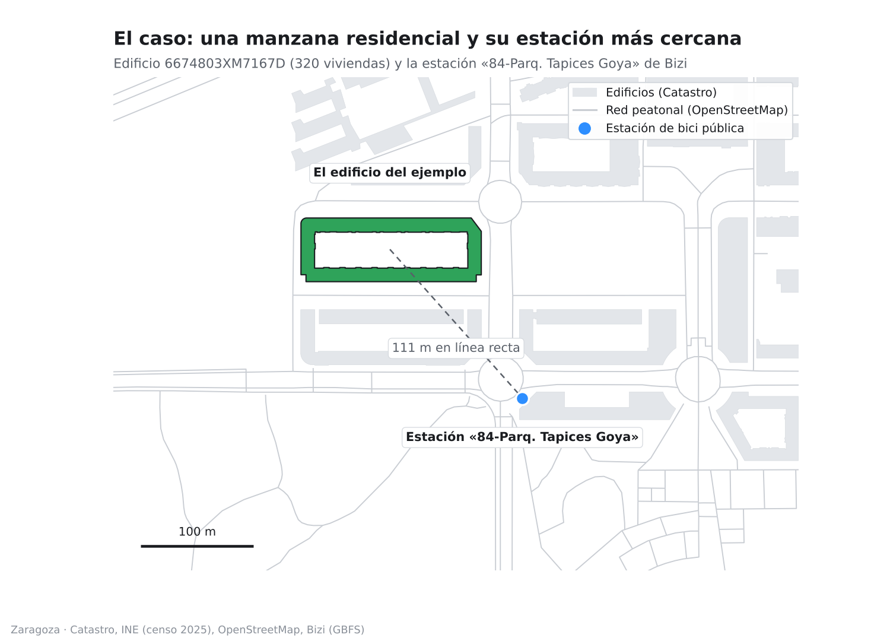
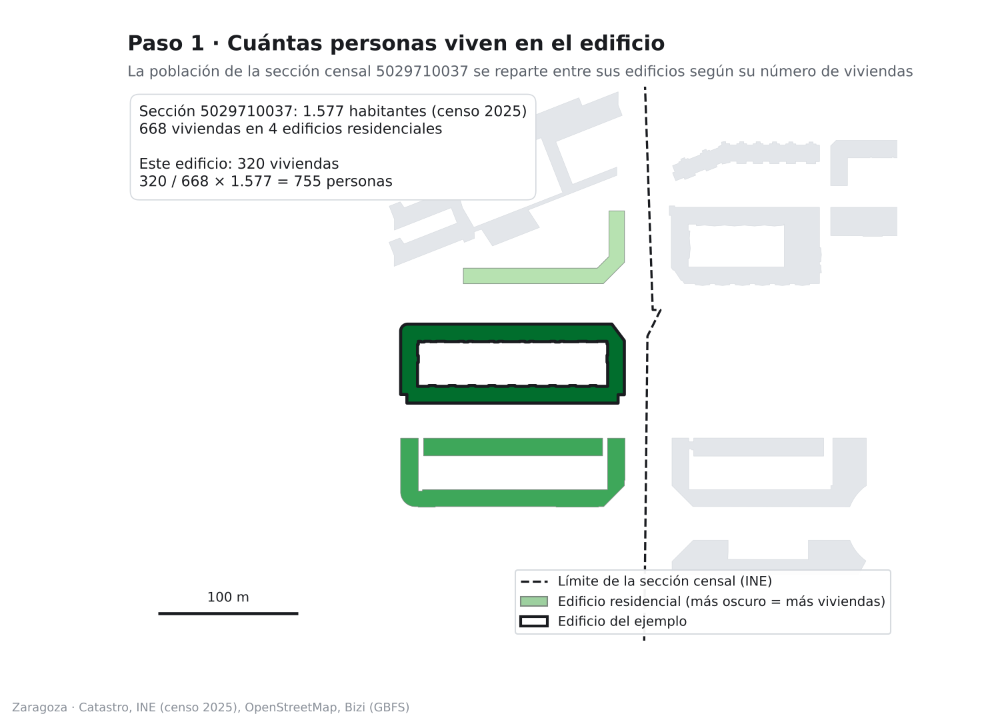
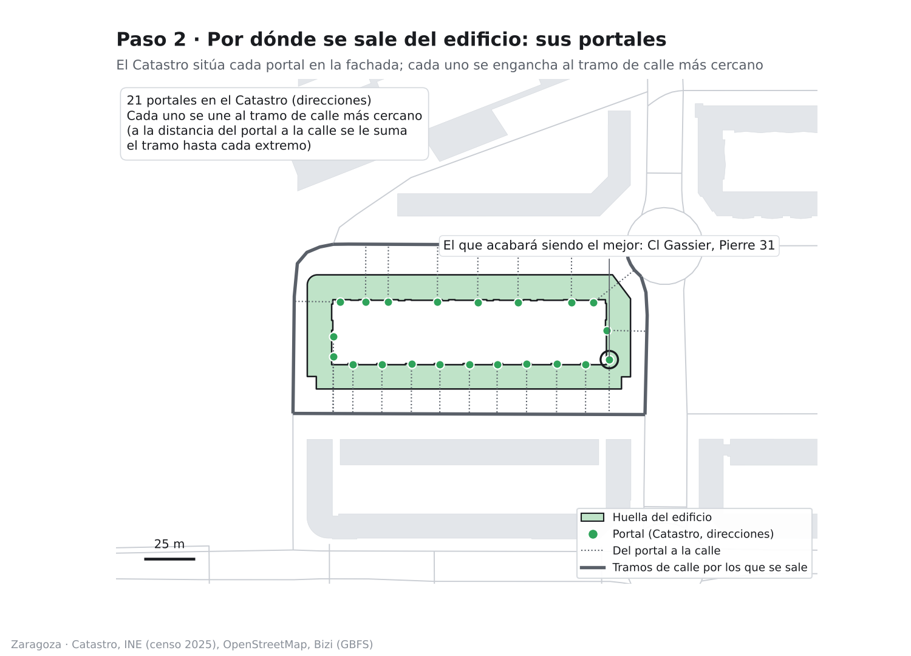
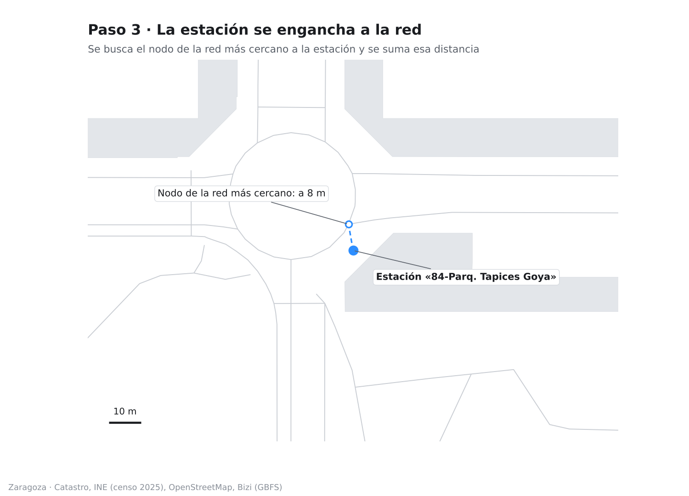
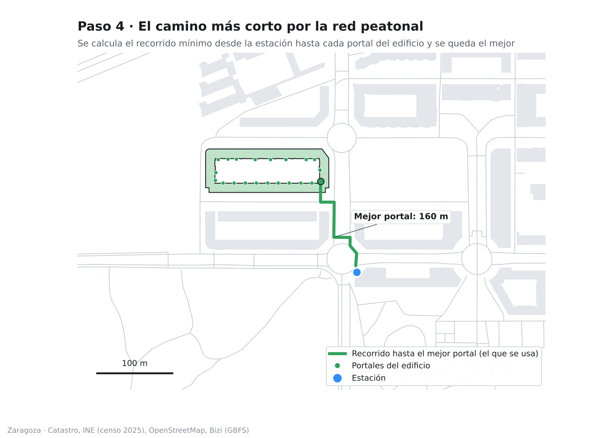
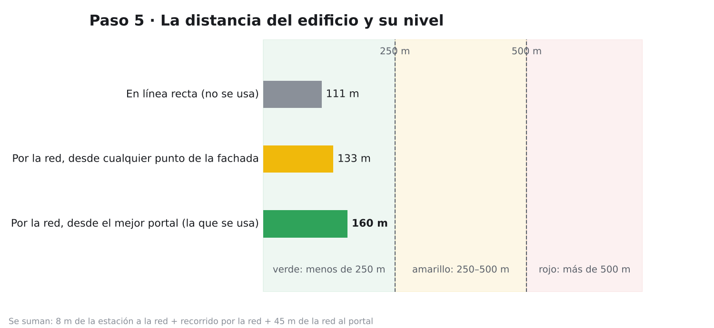

Metodología
Cómo se calcula, para cada ciudad, qué parte de la población vive cerca de una estación de su sistema de bicicleta pública, explicado con un edificio real de Zaragoza.
En pocas palabras
Para cada edificio residencial se estima cuántas personas viven en él y a qué distancia andando por la calle está la estación más cercana. Con esa distancia cada edificio, y sus habitantes, cae en uno de tres niveles:
Verde: menos de 250 m Amarillo: de 250 a 500 m Rojo: más de 500 m
Sumando los habitantes de cada nivel salen las cifras por sección censal, barrio, distrito y ciudad. No se mide en línea recta: se recorre la red peatonal real, con sus cruces, sus rodeos y sus barreras (vías, autopistas, ríos o manzanas cerradas).
Datos de partida
| Dato | Fuente | Para qué se usa |
|---|---|---|
| Estaciones | Feed GBFS oficial del operador (station_information) o, si no lo publica, la API de CityBikes | Posición de cada estación |
| Población | INE, Censo anual de población 2025 por sección censal (1 de enero de 2025) | Habitantes de cada sección |
| Secciones censales | INE, cartografía de secciones 2025 | Límites de cada sección; su unión es el término municipal analizado |
| Edificios | Catastro INSPIRE Buildings (DG del Catastro); en Bilbao, Donostia y Vitoria, catastros forales | Huella, uso y número de viviendas de cada edificio |
| Portales | Catastro INSPIRE Addresses (DG del Catastro): direcciones de tipo portal | Por dónde se sale de cada edificio a la calle |
| Red peatonal | OpenStreetMap, con el filtro de vías transitables a pie de OSMnx | Calles, aceras, sendas y pasos por los que se puede andar |
| Barrios y distritos | Ayuntamientos cuando los publican; si no, distritos censales del INE | Agrupar los resultados por zonas |
El cálculo, paso a paso, con un caso real
El ejemplo es una manzana cerrada del Actur, en Zaragoza: el edificio catastral 6674803XM7167D, con 320 viviendas. Su estación de Bizi más cercana es la 84, «Parque Tapices de Goya», al otro lado de la glorieta.

Paso 1 Cuántas personas viven en el edificio
El INE publica cuántas personas viven en cada sección censal (unidades de entre 1.000 y 2.500 habitantes), pero no en cada edificio. Esa población se reparte entre los edificios residenciales de la sección en proporción a su número de viviendas, según el Catastro.

= 320 ÷ 668 × 1.577 ≈ 755 personas
Así, la suma de todos los edificios de una sección coincide exactamente con el censo. Se usan los edificios con uso principal residencial y al menos una vivienda. En los raros casos en que una sección tiene población pero ningún edificio residencial, se usan los edificios de otros usos con viviendas y, si tampoco los hay, un punto en el centro de la sección, para no perder a nadie.
Paso 2 Por dónde se sale del edificio: sus portales
Un edificio no es un punto, y no se sale de él por cualquier lado: se sale por sus portales. El Catastro publica la dirección de cada inmueble con el punto exacto de su portal, sobre la fachada que da a la calle de esa dirección. Cada portal se une al tramo de la red peatonal más cercano; si ese tramo es otra calle con nombre (un portal en una esquina) y hay cerca un tramo de la calle de su dirección, se usa este. A la distancia del portal a la calle se le suma lo que hay hasta cada extremo del tramo.

Todavía no se sabe cuál será el mejor portal: depende de dónde esté la estación y de cómo se llega desde ella. Eso se decide en el paso 4.
Si el Catastro no tiene ningún portal del edificio (entre el 4 % y el 25 % de los edificios residenciales según la ciudad, y todos en Bilbao, Donostia y Vitoria, cuyos catastros forales no sitúan el portal), se usa cualquier punto de la red a 30 m o menos de su fachada, sumando lo que hay hasta el borde, y como respaldo los dos extremos de la calle más cercana a su punto interior.
Paso 3 La estación se engancha a la red
Las coordenadas de una estación no suelen caer justo sobre una línea de la red: está en una acera, una plaza o un aparcamiento. Se busca el nodo de la red más cercano (un cruce o un punto donde cambia la calle) y se suma esa distancia.

Paso 4 El camino más corto por la red peatonal
Con la estación y los portales del edificio enganchados a la red, se calcula el recorrido más corto entre ellos con el algoritmo de Dijkstra, que recorre la red desde la estación en orden de distancia creciente. La distancia de cada portal es:
De todos los portales se queda el de menor distancia.

Paso 5 La distancia del edificio y su nivel

Con 160 m el edificio queda en verde, y sus 755 habitantes cuentan como población a menos de 250 m. Si valiera cualquier punto a 30 m de la fachada saldría a 133 m: no cambia el nivel, pero en muchos otros edificios esa diferencia sí lo cambia. La línea recta (111 m) nunca se usa: subestima siempre lo que hay que andar.
Es la cifra que muestra la web al pulsar este edificio en el mapa de Zaragoza (desde el zoom 14), junto con su población y el nombre de la estación.
Para todos los edificios a la vez
Hacer el paso 4 estación a estación sería lento. Se usa un truco estándar: se añade a la red un origen ficticio unido a todas las estaciones y se calcula una sola vez el camino más corto desde él (Dijkstra multiorigen). Así cada punto de la red obtiene a la vez su distancia a la estación más cercana y cuál es esa estación. Luego cada edificio toma el mínimo entre sus portales (o sus accesos por la fachada, si no tiene portal en el Catastro).
- La búsqueda se corta a 1.500 m: un edificio sin ninguna estación a menos de 1,5 km cuenta como rojo.
- La red se descarga con 1 km de margen alrededor del término municipal, para que los recorridos que salen y vuelven a entrar del municipio, o las estaciones cercanas al límite, se calculen bien.
- Las estaciones situadas fuera del municipio se conservan: también dan servicio a los vecinos del borde.
De los edificios a las cifras de la web
Cada edificio pertenece a una sección censal, un barrio y un distrito: se asigna por el punto interior de su huella; si cae fuera de todos los polígonos, al más cercano. Las cifras de cada zona son la suma de los habitantes de sus edificios en cada nivel, y sus porcentajes, esa suma entre la población de la zona. La de la ciudad es la suma de todo el término municipal.
Ranking de estaciones
Para cada estación se calcula cuánta gente vive a menos de 250 m y entre 250 y 500 m de esa estación por la red, con el mismo método de portales. Una persona puede contar para varias estaciones si las tiene todas cerca. La opción «solo la base más cercana» cuenta a cada persona una sola vez, en la estación que le queda más cerca, y sirve para ver a cuánta población atiende cada una en exclusiva.
Simulador de ampliación
El simulador propone dónde poner estaciones nuevas, una a una, eligiendo siempre la que más mejora la cobertura teniendo en cuenta las anteriores.
- Candidatos: los nodos de la red peatonal dentro del municipio, uno por cada celda de 50 × 50 m (el más cercano al centro de la celda).
- Qué se mide: la mejora ponderada por persona. Pasar de rojo a amarillo vale 1, de amarillo a verde 1 y de rojo a verde 2. Así cuenta tanto sacar a gente del rojo como llevarla al verde.
- Cómo se elige: un algoritmo voraz con evaluación perezosa (CELF). Da exactamente la misma secuencia que probar todos los candidatos en cada paso, pero mucho más rápido.
- Hasta cuántas: un máximo por ciudad (de 30 en los sistemas más pequeños a 1.000 en Madrid). El algoritmo se para antes si ninguna estación nueva mejora nada.
La columna «Nuevas para 80 %» de la página comparativa es el número de estaciones del simulador a partir del cual el 80 % de la población viviría a menos de 250 m. «Ya» significa que se supera hoy; «—», que no se alcanza dentro del máximo del simulador.
Cómo se comprueba
- Reparto de población: la suma por edificios coincide exactamente con el censo en cada sección, barrio, distrito y ciudad.
- Distancias: en cada ciudad se toman 50 edificios al azar y se recalcula su ruta de forma independiente, con otra librería (networkx), desde todos sus portales (o accesos por la fachada) hasta todas las estaciones. Coinciden los 50 en todas las ciudades.
- Ranking: la distancia mínima de cada edificio calculada estación a estación coincide con la del cálculo multiorigen, y la población a menos de 250 m de alguna estación coincide con el total en verde.
- Ampliación: la cobertura con 0, 100 y el máximo de estaciones nuevas se recalcula desde cero y coincide exactamente con la del algoritmo.
Los informes de cada ciudad están en el repositorio.
Limitaciones
- Pendientes: la distancia es en metros, no en tiempo ni en esfuerzo. En ciudades con cuestas (Barcelona, Bilbao, Santander, Gijón…) 400 m cuesta arriba pesan más que 400 m en llano.
- Portales: el Catastro registra a menudo una sola dirección por parcela. En las manzanas cerradas y los conjuntos con varios portales reales solo se mide desde los registrados, y la distancia puede salir algo larga. Al contrario, en los edificios sin portal en el Catastro se supone que se puede salir por el lado más favorable de la fachada, algo optimista.
- Enganche de las estaciones: se hace al nodo de la red más cercano, no al punto más cercano de la calle. Suma una mediana de unos 7–9 m, y más de 25 m en un 7 % de las estaciones, cuando el nodo más cercano está en otra calle.
- Red peatonal: depende de lo completo que esté OpenStreetMap. Una senda que no está dibujada no existe para el cálculo, y un paso privado mal etiquetado puede abrir un atajo que no existe.
- Población residente: solo se cuenta dónde vive la gente, no dónde trabaja o estudia.
- Estaciones: se toman tal cual las publica el operador o CityBikes el día de la descarga, sin comprobar si funcionan ni cuántos anclajes tienen.
Diferencias entre ciudades
- Edificios: en Bilbao, Donostia y Vitoria se usan los catastros forales. Como no publican el uso de forma homogénea, allí se considera residencial cualquier edificio con viviendas. Tampoco sitúan el portal (Bizkaia y Gipuzkoa publican direcciones, pero en el centro del edificio; Álava no las publica), así que allí todos los edificios se miden desde la fachada.
- Zonas: Madrid, Barcelona, Zaragoza, València, Sevilla, Valladolid y Las Palmas de Gran Canaria tienen barrios oficiales. El resto usa los distritos censales del INE («Distrito N»), sin nivel de barrio.
- Estaciones: en unos sistemas vienen del feed oficial del operador y en otros de CityBikes. Las redes rurales o turísticas con una estación por pueblo (Aller, A Illa de Arousa, Villarcayo) tienen coberturas bajas por diseño.
- Fechas: todas las ciudades usan el mismo censo (2025) y datos de estaciones, edificios y red descargados en noviembre de 2026.
El código completo, la configuración de cada sistema y el registro de decisiones están en GitHub.